Seis jeitos de desenhar o app
Cada opção mostra as mesmas três telas: o início, onde a família registra a consulta por voz ou foto; a linha do tempo da criança; e o detalhe de uma consulta organizada pela IA.
Clara e direta
Fundo branco e verde-petróleo. Um botão grande de microfone no centro, no estilo de uma busca. É a mais fiel ao "registre em 30 segundos" da especificação.
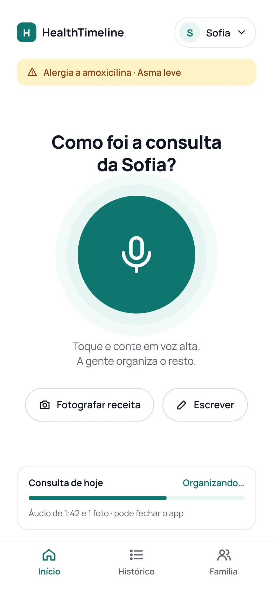
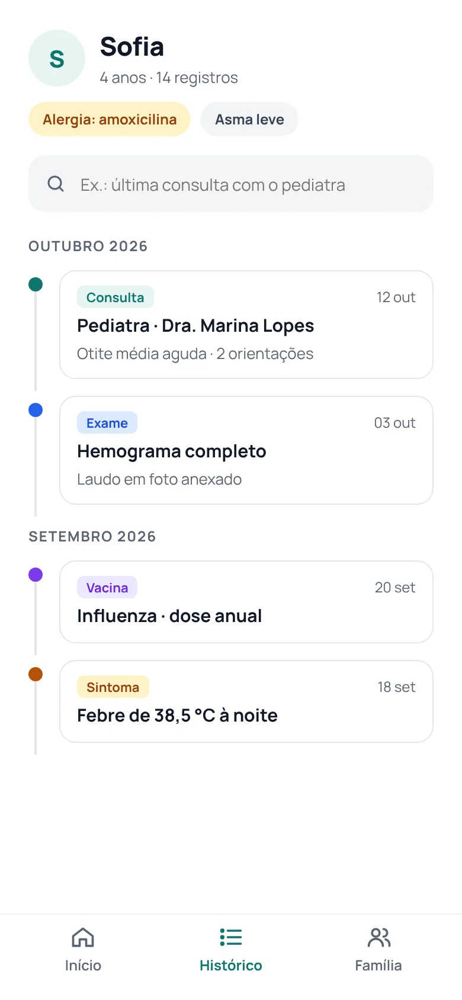
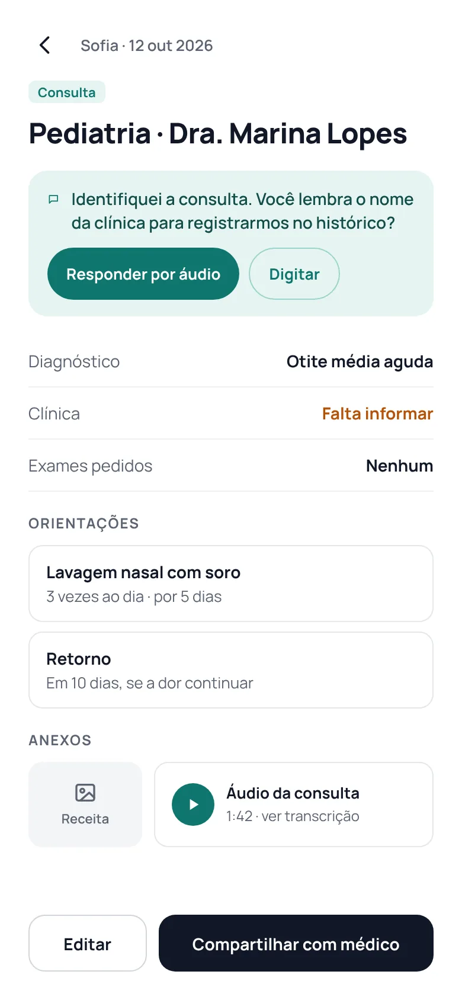
Deslize para o lado para ver as 3 telas →
Acolhedora, foco na família
Azul e cantos bem arredondados. Os rostos da família no topo, dois blocos grandes para falar ou fotografar e o copiloto como uma conversa.
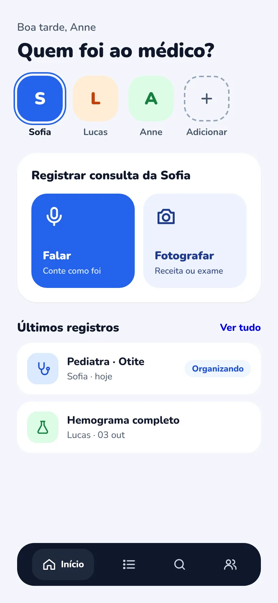
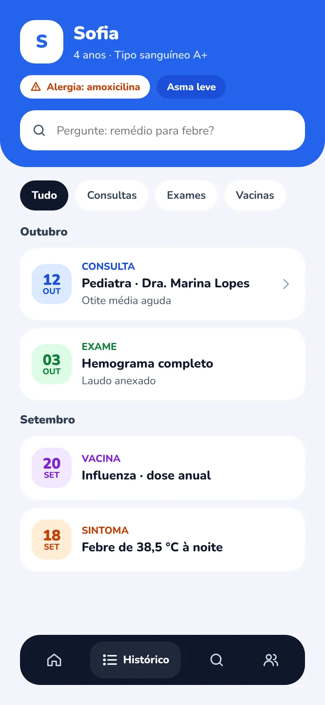
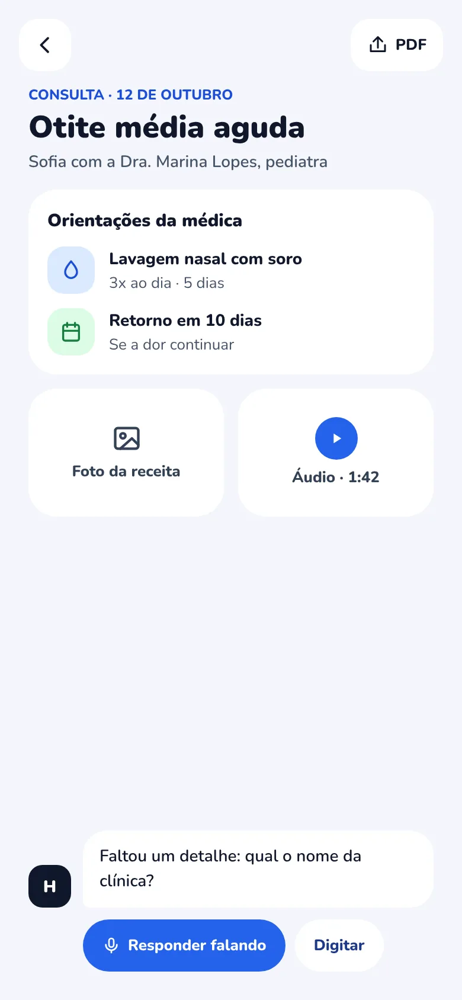
Deslize para o lado para ver as 3 telas →
Escura e premium
Fundo escuro e verde-menta. O início mostra o app gravando, com a onda do áudio e dicas do que falar.
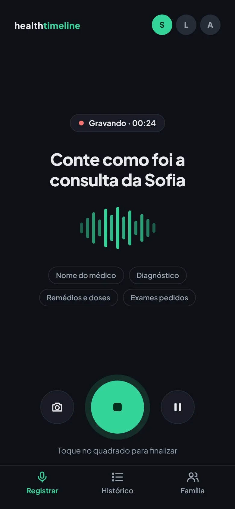
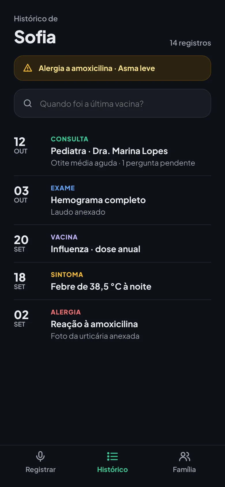
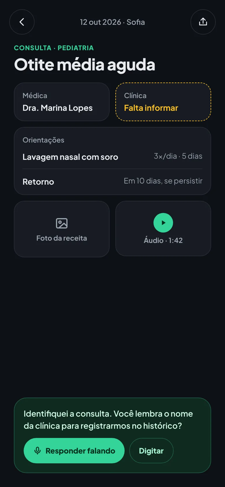
Deslize para o lado para ver as 3 telas →
Lúdica e colorida
Tons pastéis, letras arredondadas e um "diário" da criança. Clima leve para famílias.
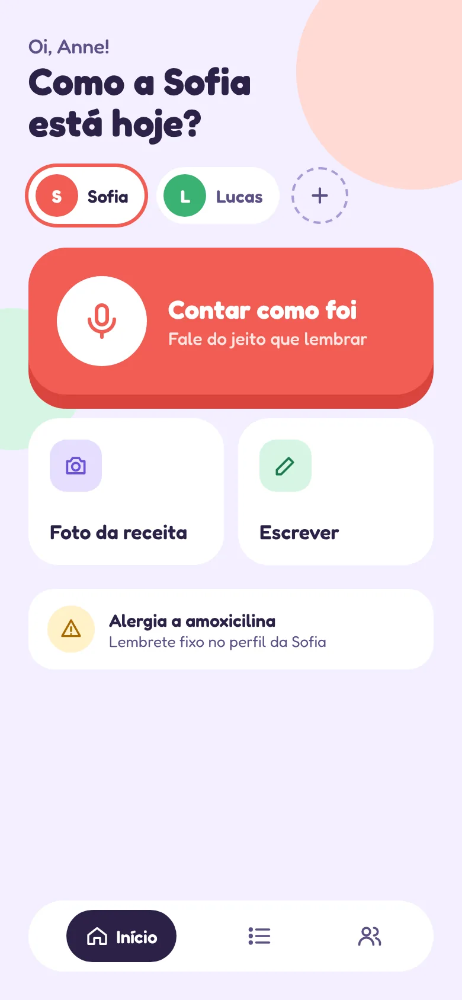
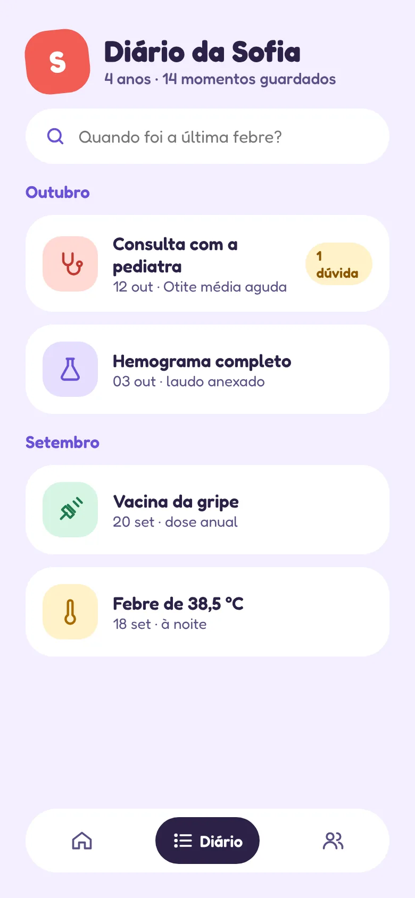
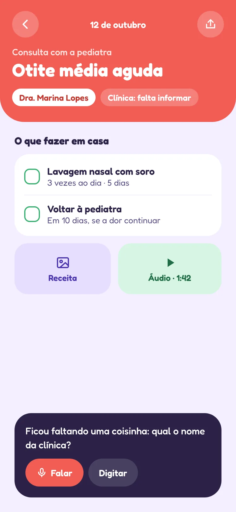
Deslize para o lado para ver as 3 telas →
Blocos estilo Notion
Preto e branco, títulos com serifa e blocos que se expandem. Cada consulta vira uma página com propriedades.


Deslize para o lado para ver as 3 telas →
Ousada
Amarelo forte, bordas pretas grossas e tipografia grande. Cada ação fica óbvia.
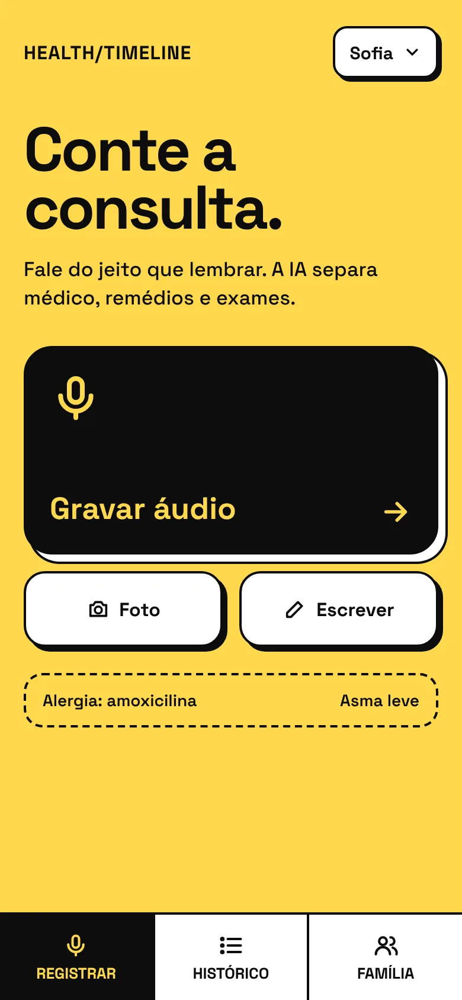
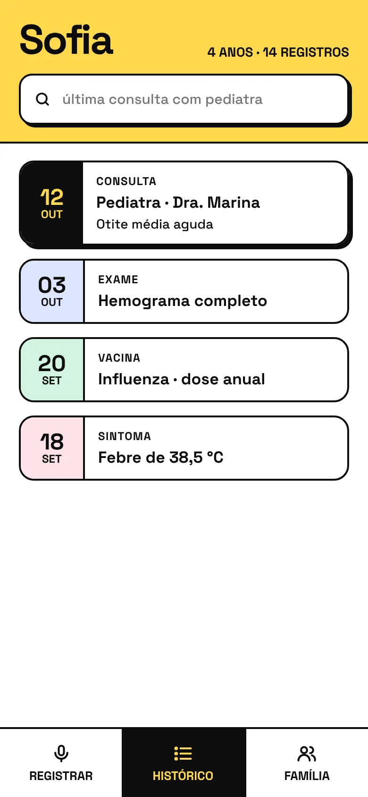
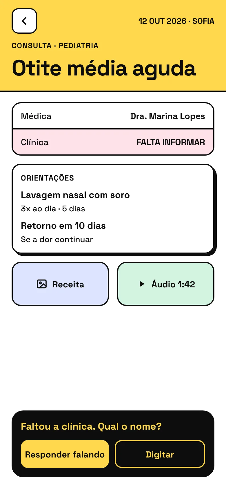
Deslize para o lado para ver as 3 telas →